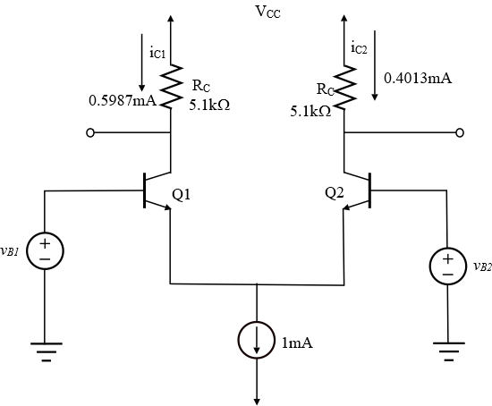

Step 1:
Refer to Figure 9.14 in the text book for the basic BJT differential pair configuration.
The differential input signal is,
Determine the emitter current  of transistor, .
of transistor, .
Substitute for , 1mA for I, and 25 mV for .
Thus, the emitter current of transistor, is  .
.
Step 2:
Determine the emitter current of transistor, .
Substitute for  , and 1mA for I.
, and 1mA for I.
Thus, the emitter current of transistor, is .
Step 3:
Determine the output voltage .
Substitute  for and
for and  for
for  .
.
Substitute for and for .
Thus, the output voltage is .
Step 4:
Determine the value of from the equation,
.
Substitute 1 V for
Thus, the collector resistance is .
Hence, all the design parameters are determined.
The circuit diagram is,

Step 5:
The largest possible common mode voltage is,
Substitute 5V for VCC, 1 for , for I, and for  .
.
Therefore, the largest common mode voltage is, .